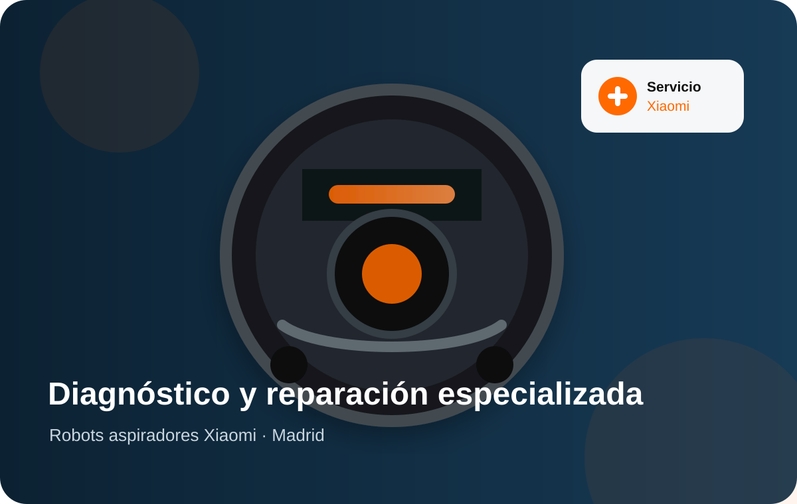
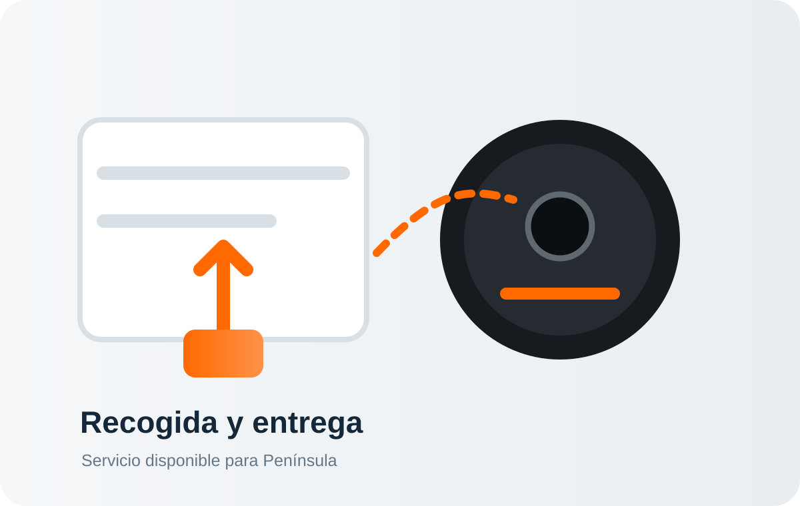

Especialización Xiaomi
Servicio centrado únicamente en robot aspiradores de la marca Xiaomi.
Especialistas exclusivamente en robot aspiradores Xiaomi. Revisamos averías de carga, batería, sensores, navegación, motores, ruedas, cepillos, Wi‑Fi, mapas, depósitos y bases de carga o autovaciado.
Servicio técnico independiente. No somos servicio técnico oficial Xiaomi y no gestionamos equipos cubiertos por la garantía del fabricante.
Servicio centrado únicamente en robot aspiradores de la marca Xiaomi.
Te informamos del coste antes de realizar la reparación.
Garantía sobre la intervención realizada según condiciones.
Solicita la recogida de tu robot aspirador desde cualquier punto de Península.

Realizamos diagnóstico y reparación de robots aspiradores Xiaomi con problemas electrónicos, mecánicos o de software. Revisamos el equipo, localizamos la avería y comunicamos el presupuesto antes de intervenir.
Estas son algunas de las incidencias habituales que podemos diagnosticar en equipos Xiaomi.
Robot que no carga, no enciende, se apaga o presenta fallos en la base de carga.
Pérdida de autonomía, apagados repentinos, batería degradada o errores relacionados.
Errores de sensores, navegación errática, golpes, giros continuos o problemas de mapeo.
Bloqueos, ruidos, pérdida de movimiento, cepillos que no giran o fallos en motores.
Problemas de conexión, mapas, configuración, actualizaciones o errores de funcionamiento.
Revisión de bases de carga, estaciones de autovaciado y accesorios compatibles Xiaomi.
Consulta las valoraciones publicadas por clientes sobre nuestro servicio y atención.
Visita nuestro canal y descubre contenido técnico y trabajos realizados.

Cuéntanos el modelo de robot Xiaomi y la avería.
Puedes traerlo a nuestras instalaciones o solicitar recogida.
Revisamos el equipo y te informamos del coste antes de reparar.
Tras tu aceptación realizamos la intervención, las pruebas y la entrega.
C. de Joaquín María López, 26, 28015 Madrid. Metro Islas Filipinas, Canal y Moncloa. Aparcamiento público en Calle Blasco de Garay 61.
El formulario se envía directamente mediante la Gmail API configurada en Vercel. No abre ningún programa de correo y no utiliza FormSubmit.
Este servicio está especializado exclusivamente en robot aspiradores Xiaomi.
De lunes a viernes de 09:30 a 18:00. Sábados y domingos permanece cerrada la atención presencial.
Sí. Puedes utilizar el botón de solicitud de recogida para gestionar el envío desde Península.
No. Somos un servicio técnico independiente y no gestionamos reparaciones cubiertas por la garantía oficial del fabricante.